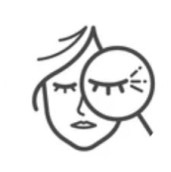
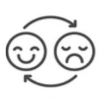
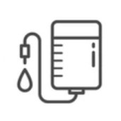

<div class="logo-top logo"></div>
<div class="logo-bottom logo"></div>
<section class="panel autoload" data-count="4" data-next="slide5" data-prev="slide3">
	<div class="containerBlock">
		<div class="slide slide-4">
			<div class="header">
				<div class="header__title">МЕНОПАУЗА</div>
				<div class="header__sub-title">КОМПЛЕКСНИЙ МЕДИЧНИЙ ДІАГНОЗ 360°</div>
			</div>
			<ul class="list">
				<li class="list__item list__item--1">
					<div class="list__card">
						
						<div class="list__title">
							ВИДИМІ<br />
							ОЗНАКИ НА ШКІРІ
						</div>
						<div class="list__sub-title">ОЗНАКИ СТАРІННЯ</div>
						<ul class="list-text">
							<li class="list-text__item">• Втрата еластичності</li>
							<li class="list-text__item">• Глибокі зморшки</li>
							<li class="list-text__item">• Сухість шкіри</li>
							<li class="list-text__item">• Вугрові запалення (акне)</li>
							<li class="list-text__item">• Гіперпігментація</li>
							<li class="list-text__item">• Поява темних кіл під очима</li>
						</ul>
						<div class="hand hand--1 delay3"></div>
					</div>
				</li>
				<li class="list__item list__item--2">
					<div class="list__card">
						
						<div class="list__title">
							ЗМІНА ЯКОСТІ<br />
							ЖИТТЯ
						</div>
						<div class="list__sub-title">КЛІМАКТЕРИЧНИЙ СИНДРОМ</div>
						<ul class="list-text">
							<li class="list-text__item">• Вазомоторні приливи</li>
							<li class="list-text__item">• Нічна пітливість</li>
							<li class="list-text__item">• Урогенітальні симптоми</li>
							<li class="list-text__item">• Біль у суглобах і кістках</li>
							<li class="list-text__item">• Додатково: порушення сну, астенія, депресія, втрата пам’яті, перепади настрою, набір ваги…</li>
						</ul>
						<div class="hand hand--2 delay2"></div>
					</div>
				</li>
				<li class="list__item list__item--3">
					<div class="list__card">
						
						<div class="list__title">
							НАПАДИ<br />
							ЗАХВОРЮВАНЬ
						</div>
						<div class="list__sub-title">ЧЕРЕЗ ГОРМОНАЛЬНІ ВАРІАЦІЇ</div>
						<ul class="list-text">
							<li class="list-text__item">• Остеопороз і ризик тріщин кісток</li>
							<li class="list-text__item">• Інсулінорезистентність:<br />ризик діабету типу II</li>
							<li class="list-text__item">
								• Отеросклероз:<br />
								ризик стенокардії чи серцевого нападу
							</li>
							<li class="list-text__item">• Онкологічні захворювання</li>
						</ul>
						<div class="hand hand--3 delay1"></div>
					</div>
				</li>
			</ul>
			<div class="help-inf">Натисніть на жовті блоки</div>
		</div>
	</div>
</section>
<style>
	section {
		opacity: 0;
	}
	.prev {
		display: none;
	}
	.next {
		display: none;
	}
	.mainSlide {
		height: 100%;
	}

	.list {
		display: -webkit-box;
		display: -ms-flexbox;
		display: flex;
		margin: clamp(0.04vw, 7.5vh, 4.2vw) -10px 0;
		list-style: none;
		padding: 0;
	}
	.list__item {
		padding: 0 10px;
		width: 33.3%;
	}
	.list__item--1 {
		width: 31%;
	}
	.list__item--2 {
		width: 34.5%;
	}
	.list__item--3 {
		width: 34.5%;
	}
	.list__card {
		position: relative;
		background: rgba(255, 204, 0, 0.270588);
		border-radius: clamp(0.04vw, 7.9vh, 4.45vw);
		height: 100%;
		padding: clamp(0.04vw, 2.9vh, 1.64vw) clamp(0.04vw, 3.33vh, 1.88vw) clamp(0.04vw, 4.3vh, 2.42vw);
	}
	.list__card::before {
		content: '';
		display: block;
		position: absolute;
		top: 48.5%;
		left: 100%;
		width: 20px;
		height: 1px;
		background: #000;
	}
	.list__item--3 .list__card::before {
		display: none;
	}
	.list__icon {
		position: absolute;
		left: clamp(-2.04vw, -1.38vh, -0.78vw);
		top: clamp(-2.04vw, -1.66vh, -0.93vw);
		border-radius: 50%;
		width: clamp(0.5vw, 10.4vh, 5.85vw);
		height: clamp(0.5vw, 10.4vh, 5.85vw);
	}
	.list__title {
		font-weight: 700;
		text-align: center;
		color: #000000;
		font-size: clamp(0.04vw, 4.02vh, 2.26vw);
		line-height: 1.2;
		opacity: 0;
	}
	.list__sub-title {
		font-size: clamp(0.04vw, 2.9vh, 1.64vw);
		text-align: center;
		text-transform: uppercase;
		margin-bottom: clamp(0.04vw, 3.9vh, 2.6vw);
		opacity: 0;
	}
	.list-text {
		padding: 0;
		list-style: none;
		margin: 0;
		opacity: 0;
	}
	.list-text__item {
		font-size: clamp(0.04vw, 2.9vh, 1.64vw);
		line-height: 1.2;
	}
</style>
<script>
	TweenMax.to('section', 0.5, { opacity: 1, ease: Linear.easeNone });
	var tl = new TimelineMax({ paused: true, onComplete: () => show_arrow_next_slide() });

	var prodItems = document.querySelectorAll('.list__item');

	prodItems.forEach((prodItem, index) => {
		var flexInteractiveItem = prodItem.querySelector('.list__card');
		var title = prodItem.querySelectorAll('.list__title');
		var subTitle = prodItem.querySelector('.list__sub-title');
		var listText = prodItem.querySelector('.list-text');
		var absTap = prodItem.querySelector('.list__item .hand');

		// Timeline
		var tl2 = new TimelineMax({ paused: true });
		tl2.to(absTap, 0.5, { opacity: 0, scale: 0, ease: Linear.easeNone });
		tl2.to(title, 1, {
			opacity: 1,
			ease: Expo.easeOut,
		});
		tl2.to(subTitle, 1, {
			opacity: 1,
			ease: Expo.easeOut,
		});
		tl2.to(listText, 1, {
			opacity: 1,
			ease: Expo.easeOut,
		});

		// HOVER
		flexInteractiveItem.addEventListener('click', function () {
			tl2.play();
			prodItem.classList.add('viewing');
			show_arrow_next_slide();
		});
	});
	function show_arrow_next_slide() {
		if ($('.list  .list__item.viewing').length == 3) {
			setTimeout(function () {
				$('.prev').show('slow');
				$('.next').show('slow');
			}, 2000);
		}
	}
</script>
